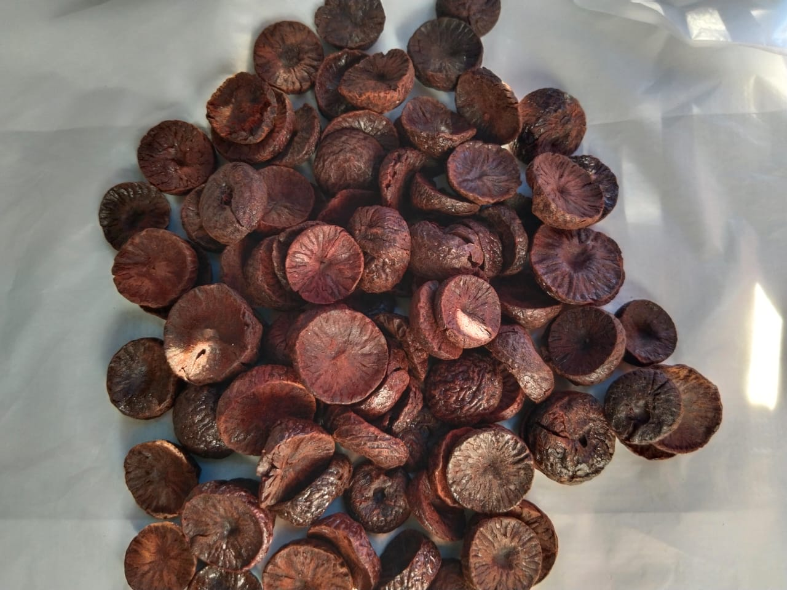
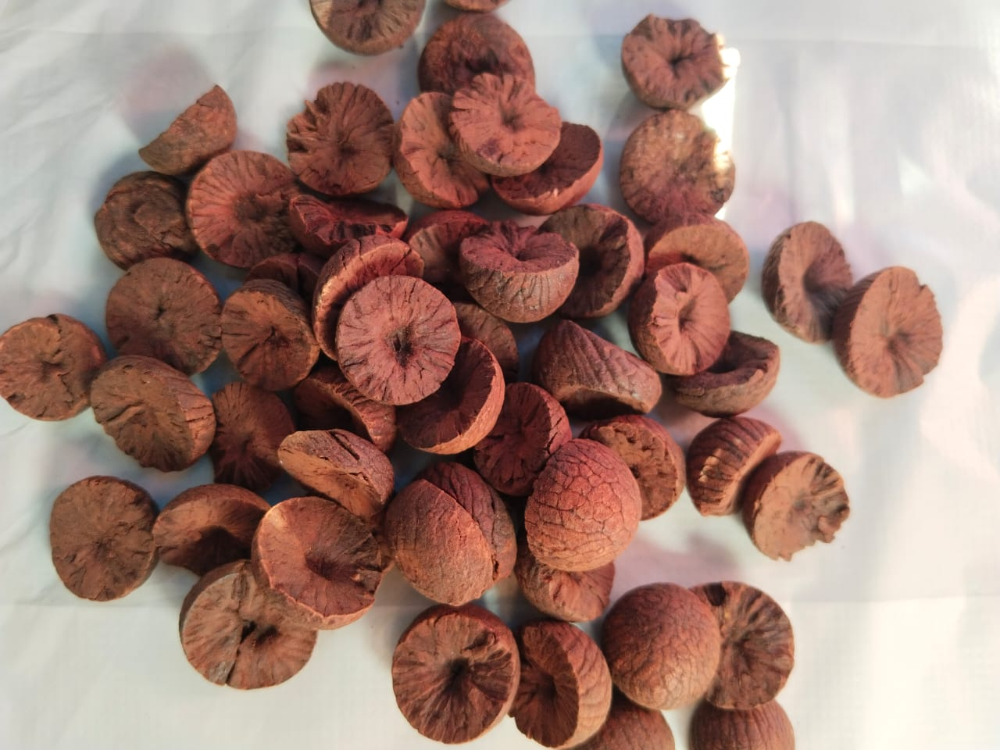
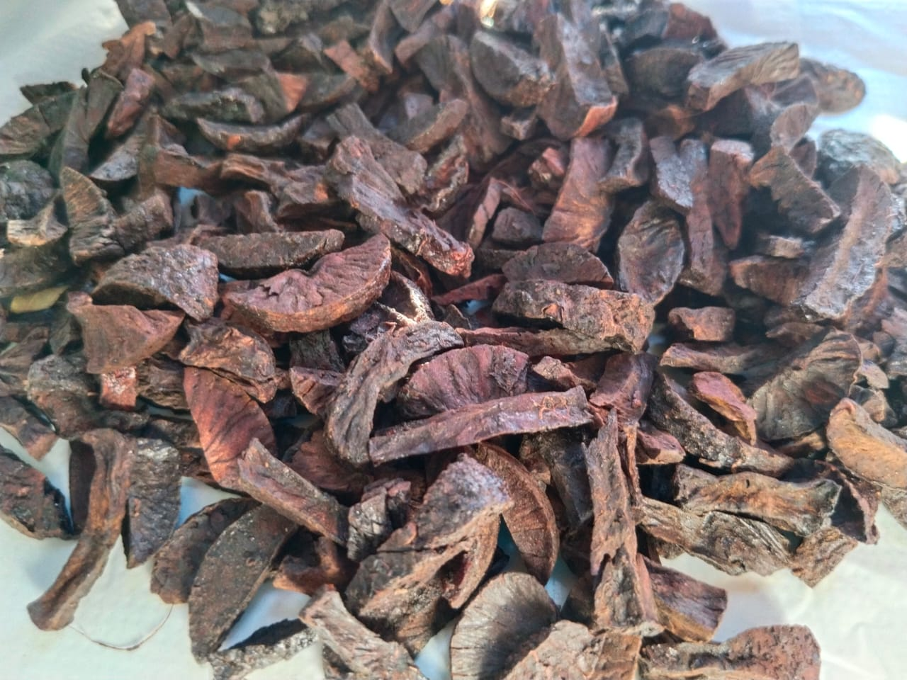
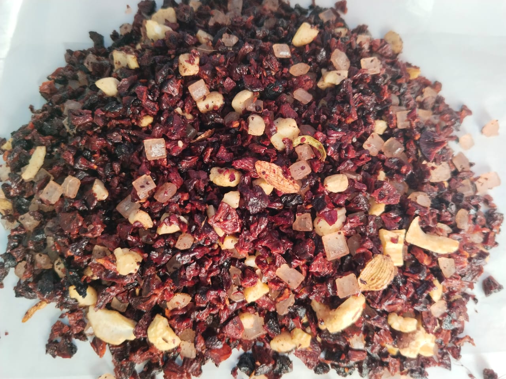
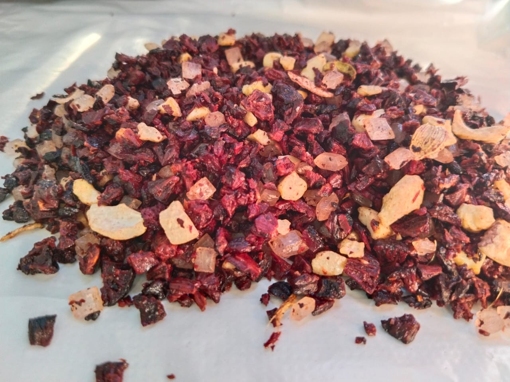
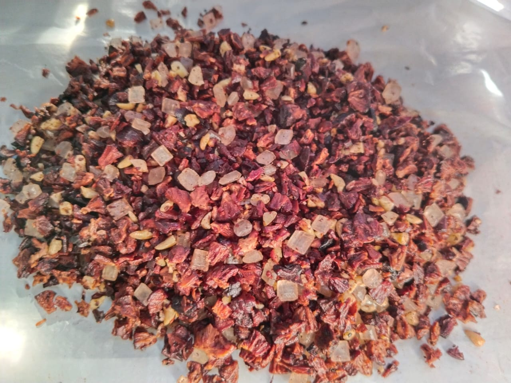
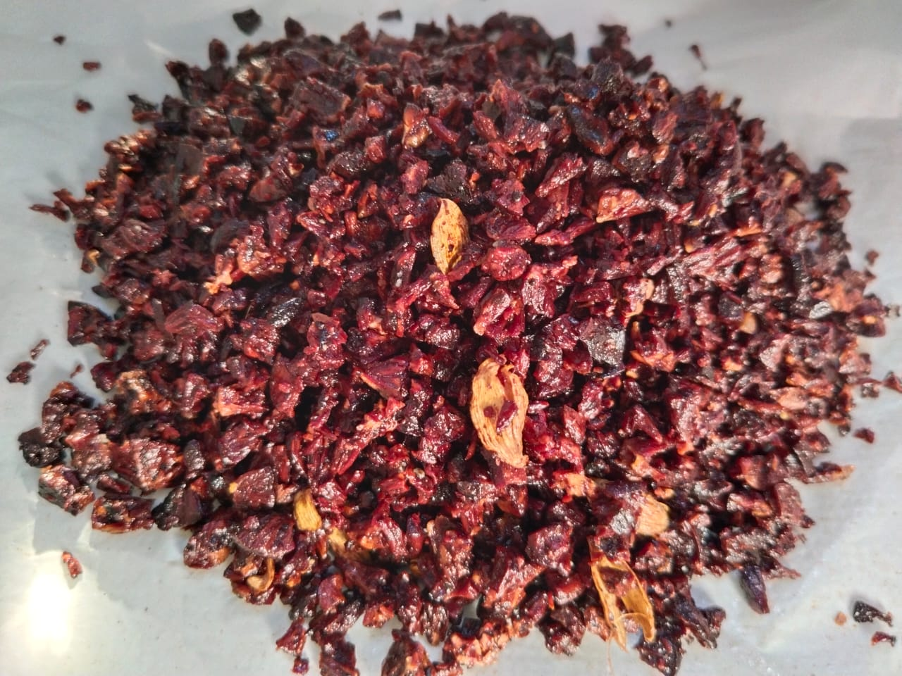

Our Products

Battlu Supari
Smooth whole areca nut with an easy-to-chew texture — ideal for daily use.
Buy Now

NMD Supari
Hard areca nut for those who prefer a bold, crunchy texture with a long-lasting chew.
Buy Now

Kocchu Supari
Plain sliced areca nut — clean, simple, and convenient to chew with no added flavor.
Buy Now

Masala Supari
Our signature blend — a smooth, non-essence powdered supari mixed with elaichi and topped with sweet diamond sugar.
Buy Now

Special Supari
Smooth, essence-rich powdered supari with sweetness and sparkling diamond sugar — a festive favorite.
Buy Now

Bette Supari
Hard sweet powder with mixed sweet balls and diamond sugar — a playful twist on tradition.
Buy Now
Battlu Dry Powder
Plain, smooth dry powdered supari without any additives or diamond sugar — pure and natural.
Buy Now

Plain Supari
Sweet elaichi mix in powdered form with essence only — no diamond sugar. Light and aromatic.
Buy Now